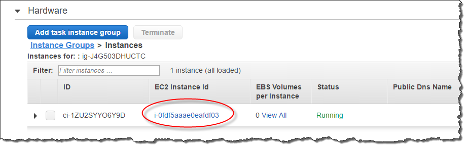

本文為英文版的機器翻譯版本，如內容有任何歧義或不一致之處，概以英文版為準。
建立 Amazon Redshift Spectrum 外部結構描述
所有外部資料表必須建立在使用 CREATE EXTERNAL SCHEMA 陳述式建立的外部結構描述中。
注意
某些應用程式會交互使用 database (資料庫) 和 schema (結構描述) 詞彙。在 Amazon Redshift，我們使用術語「結構描述」。
Amazon Redshift 外部結構描述參考了外部資料目錄中的外部資料庫。您可以在 Amazon Redshift、Amazon Athena、AWS Glue Data Catalog 或 Apache Hive 中繼存放區 (例如 Amazon EMR) 中建立外部資料庫。若您在 Amazon Redshift 中建立了外部資料庫，該資料庫會位於 Athena 資料目錄中。若要在 Hive 中繼存放區中建立資料庫，您需要在 Hive 應用程式中建立資料庫。
Amazon Redshift 需要授權才能代表您存取 Athena 中的資料目錄以及 Amazon S3 中的資料檔案。您應先建立 AWS Identity and Access Management (IAM) 角色，以提供該授權。然後將該角色連接至您的叢集，並在 Amazon Redshift CREATE EXTERNAL SCHEMA 陳述式中為角色提供 Amazon Resource Name (ARN)。如需授權的詳細資訊，請參閱 Amazon Redshift Spectrum 的 IAM 政策。
注意
如果您目前在 Athena 資料目錄中有 Redshift Spectrum 外部資料表，則可以將 Athena 資料目錄遷移到 AWS Glue 資料目錄。若要搭配 Redshift Spectrum 使用 AWS Glue 資料目錄，您可能需要變更 IAM 政策。如需詳細資訊，請參閱《Amazon Athena 使用者指南》中的升級至 AWS Glue 資料目錄。
若要在建立外部結構描述的同時建立外部資料庫，請指定 FROM DATA CATALOG 並在您的 CREATE EXTERNAL DATABASE 陳述式中包含 CREATE EXTERNAL SCHEMA 子句。
以下範例使用外部資料庫 spectrum_schema 建立名為 spectrum_db 的外部結構描述。
create external schema spectrum_schema from data catalog database 'spectrum_db' iam_role 'arn:aws:iam::123456789012:role/MySpectrumRole' create external database if not exists;
如果使用 Athena 管理資料目錄，請指定 Athena 資料庫名稱和 Athena 資料目錄所在的 AWS 區域。
以下範例使用 Athena 資料目錄中的預設 sampledb 資料庫建立外部結構描述。
create external schema athena_schema from data catalog database 'sampledb' iam_role 'arn:aws:iam::123456789012:role/MySpectrumRole' region 'us-east-2';
注意
region 參數參考的是 Athena 資料目錄所在的 AWS 區域，而非 Amazon S3 中資料檔案的位置。
如果使用 Hive 中繼存放區 (例如 Amazon EMR) 管理資料目錄，則必須將安全群組設定為允許叢集之間的流量。
在 CREATE EXTERNAL SCHEMA 陳述式中，指定 FROM HIVE METASTORE 並包括該中繼存放區的 URI 與連接埠號碼。以下範例使用名為 hive_db 的 Hive 中繼存放區資料庫建立外部結構描述。
create external schema hive_schema from hive metastore database 'hive_db' uri '172.10.10.10' port 99 iam_role 'arn:aws:iam::123456789012:role/MySpectrumRole'
若要檢視您叢集的外部結構描述，請查詢 PG_EXTERNAL_SCHEMA 目錄資料表或 SVV_EXTERNAL_SCHEMAS 畫面。下列範例查詢了加入 PG_EXTERNAL_SCHEMA 和 PG_NAMESPACE 的 SVV_EXTERNAL_SCHEMAS。
select * from svv_external_schemas
如需完整的命令語法與範例，請參閱 CREATE EXTERNAL SCHEMA。
在 Amazon Redshift Spectrum 中使用外部目錄
Amazon Redshift Spectrum 外部資料庫和外部資料表的中繼資料存放於外部資料目錄中。Redshift Spectrum 中繼資料預設存放於 Athena 資料目錄中。您可在 Athena 主控台中檢視並管理 Redshift Spectrum 資料庫和資料表。
您也可以使用 Hive 資料定義語言 (DDL)、使用 Athena 或 Hive 中繼存放區 (如 Amazon EMR) 建立並管理外部資料庫和外部資料表。
注意
我們建議使用 Amazon Redshift 來建立並管理 Redshift Spectrum 中的外部資料庫和外部資料表。
在 Athena 和 AWS Glue 中檢視 Redshift Spectrum 資料庫
您可以透過在您的 CREATE EXTERNAL SCHEMA 陳述式中包含 CREATE EXTERNAL DATABASE IF NOT EXISTS，來建立外部資料庫。在這類案例中，外部資料庫的中繼資料會存放在您的資料目錄內。您透過外部結構描述所建立的外部資料表中繼資料，也會存放在 資料目錄中。
Athena 和 AWS Glue 會為每個支援的 AWS 區域維護資料目錄。若要檢視資料表中繼資料，請登入 Athena 或 AWS Glue 主控台。在 Athena 中，選擇資料來源、您的 AWS Glue，然後檢視資料庫的詳細資料。在 AWS Glue 中，選擇資料庫、您的外部資料庫，然後檢視資料庫的詳細資訊。
如果您使用 Athena 建立和管理外部資料表，請使用 CREATE EXTERNAL SCHEMA 註冊資料庫。例如，下列命令可註冊名為 sampledb 的 Athena 資料庫。
create external schema athena_sample from data catalog database 'sampledb' iam_role 'arn:aws:iam::123456789012:role/mySpectrumRole' region 'us-east-1';
當您查詢 SVV_EXTERNAL_TABLES 系統檢視時，您可看到 Amazon Redshift sampledb 資料庫中的資料表，以及在 Amazon Redshift 中建立的資料表。
select * from svv_external_tables;
schemaname | tablename | location --------------+------------------+-------------------------------------------------------- athena_sample | elb_logs | s3://athena-examples/elb/plaintext athena_sample | lineitem_1t_csv | s3://myspectrum/tpch/1000/lineitem_csv athena_sample | lineitem_1t_part | s3://myspectrum/tpch/1000/lineitem_partition spectrum | sales | s3://redshift-downloads/tickit/spectrum/sales spectrum | sales_part | s3://redshift-downloads/tickit/spectrum/sales_part
註冊 Apache Hive 中繼存放區資料庫
如果您在 Apache Hive 中繼存放區中建立外部資料表，則可以使用 CREATE EXTERNAL SCHEMA 在 Redshift Spectrum 中註冊那些資料表。
在 CREATE EXTERNAL SCHEMA 陳述句中，指定 FROM HIVE METASTORE 子句並提供 Hive 中繼存放區 URI 和連接埠號碼。IAM 角色必須包含存取 Amazon S3 的許可，但不需要任何 Athena 許可。以下為註冊 Hive 中繼存放區的範例。
create external schema if not exists hive_schema from hive metastore database 'hive_database' uri 'ip-10-0-111-111.us-west-2.compute.internal' port 9083 iam_role 'arn:aws:iam::123456789012:role/mySpectrumRole';
允許您的 Amazon Redshift 叢集存取 Amazon EMR 叢集
如果您的 Hive 中繼存放區在 Amazon EMR 中，您必須提供 Amazon Redshift 叢集對 Amazon EMR 叢集的存取權限。若要執行此作業，請建立 Amazon EC2 安全群組。您接著需要允許從您 Amazon Redshift 叢集的安全群組及您 Amazon EMR 叢集的安全群組，前往 EC2 安全群組的所有傳入流量。然後，將 EC2 安全性新增到 Amazon Redshift 叢集和 Amazon EMR 叢集。
檢視您的 Amazon Redshift 叢集的安全群組名稱
如要顯示安全群組，請執行以下作業：
-
登入 AWS Management Console，開啟位於 https://console.aws.amazon.com/redshift/
的 Amazon Redshift 主控台。 -
在導覽選單上，選擇叢集，然後從清單選擇叢集以開啟其詳細資訊。
-
選擇屬性，然後檢視網路與安全設定區段。
-
在VPC 安全群組中找到您的安全群組並記下它。
檢視 Amazon EMR 主節點安全群組名稱
開啟 Amazon EMR 叢集。如需詳細資訊，請參閱《Amazon EMR 管理指南》中的使用安全組態設定叢集安全性。
在安全和存取下，記下 Amazon EMR 主節點安全群組名稱。

建立或修改 Amazon EC2 安全群組以允許 Amazon Redshift 和 Amazon EMR 之間的連線
在 Amazon EC2 儀表板中，選擇安全群組。如需詳細資訊，請參閱《Amazon EC2 Linux 執行個體使用者指南》中的安全群組規則。
選擇建立安全群組。
如果您使用的是 VPC，請選擇您的 Amazon Redshift 和 Amazon EMR 叢集所在的 VPC。
新增傳入規則。
針對 Type (類型)，請選擇 Custom TCP (自訂 TCP)。
對於 Source (資源)，選擇 Custom (自訂)。
輸入您 Amazon Redshift 安全群組的名稱。
新增另一個傳入規則。
針對 Type (類型)，選擇 TCP。
針對 Port Range (連接埠範圍)，輸入 9083。
注意
EMR HMS 的預設連接埠是 9083。如果您的 HMS 使用了不同連接埠，請在傳入規則和外部結構描述定義中指定該連接埠。
對於 Source (資源)，選擇 Custom (自訂)。
輸入安全群組的名稱和說明。
選擇建立安全群組。
將您在先前程序中建立的 Amazon EC2 安全群組新增到 Amazon Redshift 叢集
在 Amazon Redshift 中，選擇您的叢集。
選擇 Properties (屬性)。
檢視網路與安全設定，然後選擇編輯。
在VPC 安全群組中，選擇新的安全群組名稱。
選擇儲存變更。
將 Amazon EC2 安全群組新增到 Amazon EMR 叢集
在 Amazon EMR 中，選擇您的叢集。如需詳細資訊，請參閱《Amazon EMR 管理指南》中的使用安全組態設定叢集安全性。
在 Hardware (硬體) 下，選擇主節點的連結。
選擇EC2 執行個體 ID欄中的連結。
對於動作，選擇安全性、變更安全群組。
在關聯的安全群組中，選擇新的安全群組，然後選擇新增安全群組。
選擇儲存。